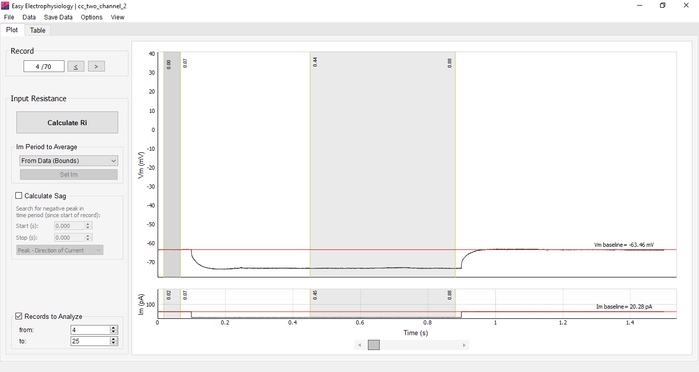
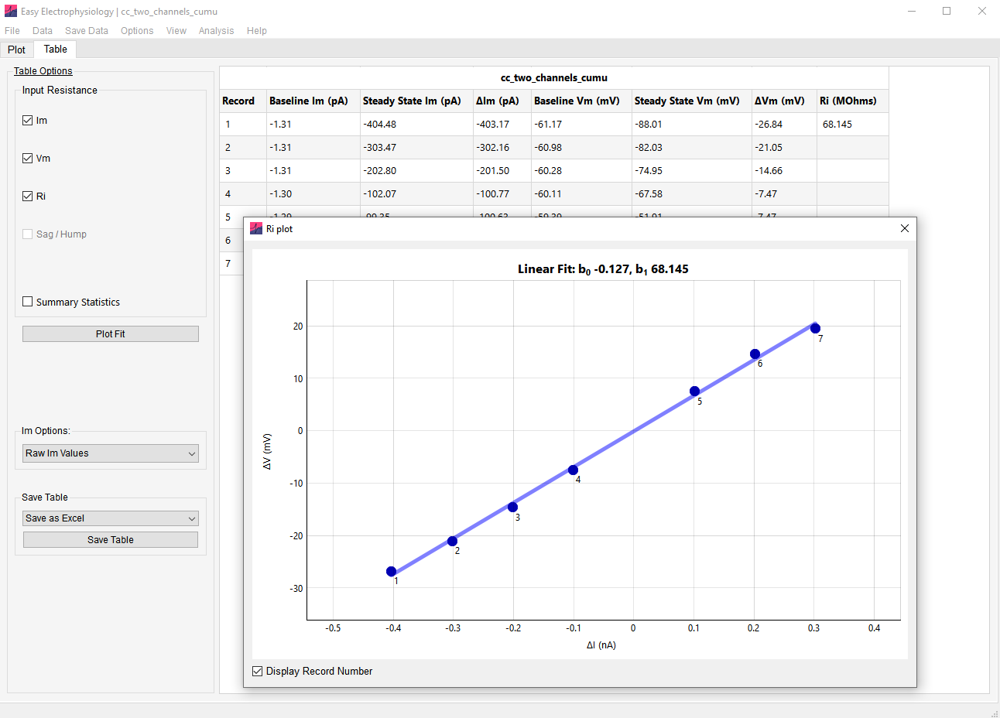

Input resistance
Input Resistance analysis provides a convenient interface for measuring the input resistance and voltage sag and hump in current-clamp mode.
To calculate input resistance, the changes in membrane voltage (\(\Delta V_\mathrm{m}\)) and membrane current (\(\Delta I_\mathrm{m}\)) must be determined from the data; \(I_\mathrm{m}\) injections can also be entered manually. Input resistance is calculated as the slope of an ordinary least-squares linear fit, where \(x = \Delta I_\mathrm{m}\) and \(y = \Delta V_\mathrm{m}\), using SciPy’s linregress with a fitted intercept. If only one record is analyzed, \(R_\mathrm{i}\) is calculated as \(\Delta V_\mathrm{m} / \Delta I_\mathrm{m}\).
For input resistance calculations, voltage is specified in \(\mathrm{mV}\) and current in \(\mathrm{nA}\), giving input resistance in \(\mathrm{M\Omega}\).
Options for analyzing the voltage sag (for negative \(I_\mathrm{m}\) injections) or hump (for positive \(I_\mathrm{m}\) injections) are also provided.
Calculating ΔVm and ΔIm
The Im Period to Average menu provides three methods for obtaining \(\Delta I_\mathrm{m}\) and \(\Delta V_\mathrm{m}\):
From Data (Bounds) – Calculates \(\Delta V_\mathrm{m}\) and \(\Delta I_\mathrm{m}\) as the difference between data in the Baseline and Measure regions. These regions are displayed automatically on the \(V_\mathrm{m}\) and \(I_\mathrm{m}\) plots. The baseline is the mean between the two baseline-region boundaries and is displayed as a horizontal red line. The measured value is the mean of the data within the measure region.
Alternatively, the current-injection protocol start and stop times can be used to position the baseline and measure regions.
From Data (Start/Stop) – Uses the known start and stop times of the current injection. Select this mode and click Set Im to enter the times. The baseline is averaged from the start of the record to the start of the \(I_\mathrm{m}\) injection, and the measured data are averaged from the start of the injection to its end.
A padding of \(n\) samples around the injection start and stop times accounts for a non-instantaneous \(\Delta I_\mathrm{m}\). Set the padding under Options › Misc. Options › Current Clamp User-Im Protocol Options; the default is \(10\) samples.
User-Input – Allows current-injection steps to be entered directly in the case the trace is not available. Select this mode, click Set Im, and enter the \(I_\mathrm{m}\) injection for each record. The number of entered injections must match the number of records selected for analysis.
For rheobase analysis in Action potential counting, a ramp protocol can be specified for exact rheobase calculation by selecting the Ramp tab and entering the current-stimulation protocol.

Region and current options
Round Im – When current is calculated from the data, the measured \(I_\mathrm{m}\) steps can be rounded according to the injection protocol. Select Round Im from the Im Options menu on the Table tab. Although the rounding algorithm accounts for noise using the injection protocol, cross-check the rounded values for stray \(I_\mathrm{m}\) measurements.
Link Im to Vm – When region boundaries are shown on both \(V_\mathrm{m}\) and \(I_\mathrm{m}\) plots, select View › Region Options › Link Im to Vm to link their positions. Moving a \(V_\mathrm{m}\) boundary then moves the corresponding \(I_\mathrm{m}\) boundary, and vice versa. This option is off by default.
Link Across Records – This option links region-boundary positions across records. Moving a boundary on one record, such as Record \(1\), moves the corresponding boundary on other records. When this option is off, each record’s boundaries can be moved independently. Change it under View › Region Options › Link Across Records. It is on by default.

Sag and hump analysis
Many neuronal types display a pronounced \(V_\mathrm{m}\) deflection following negative (sag) or positive (hump) current injection that decays to the steady-state response. Options are provided for finding the sag or hump peak within a specified time window (the Calculate Sag / Hump box).
The detected peak can follow the direction of the voltage deflection or be forced to always use a minimum or maximum. Select the method from Calculate Sag / Hump:
- Peak - Direction of Current – Uses a minimum for a negative \(I_\mathrm{m}\) deflection and a maximum for a positive deflection.
- Peak - Always Minimum – Always uses the minimum value in the search period.
- Peak - Always Maximum – Always uses the maximum value in the search period.
The sag or hump position is marked on the plot with a red circle. Its peak voltage deflection is the difference between peak \(V_\mathrm{m}\) and the steady-state \(V_\mathrm{m}\) response. The sag or hump ratio is the sag or hump divided by the peak voltage deflection from baseline.
Input resistance plot
A plot of \(\Delta V_\mathrm{m}\) (y-axis) against \(\Delta I_\mathrm{m}\) (x-axis), with the fitted line and coefficients, is available by clicking Plot Fit on the Table tab. This plot is available only when more than one record is analyzed.